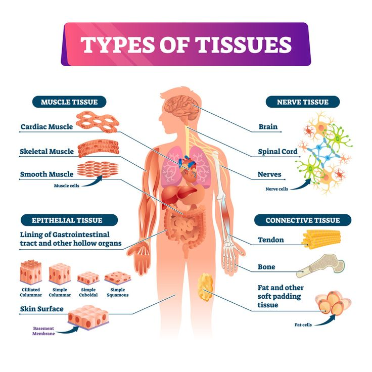

Chapter 4 Tissues
Four primary tissue types form membranes, organs, and systems.

Tissue Overview
Tissues are groups of similar cells performing shared functions. The four primary types are epithelial, connective, muscle, and neural.
Epithelial Tissue
Functions: protection, secretion, absorption, filtration, sensory input.
Key features: polarity (apical/basal), avascular but innervated, high regeneration, specialized junctions (tight, gap, desmosomes).
Classifications
| Shape | Layers | Example |
|---|---|---|
| Squamous (flat) | Simple or Stratified | Alveoli, skin, mouth |
| Cuboidal (cube) | Simple or Stratified | Kidney tubules, glands |
| Columnar (tall) | Simple, Stratified, Pseudostratified | Stomach, intestines, trachea |
| Transitional | Stratified | Urinary bladder |
Glandular Types
- Endocrine: ductless; secrete hormones into blood.
- Exocrine: ducts; secrete onto surfaces (sweat, mucus, enzymes).
- Secretion modes: Merocrine (exocytosis), Apocrine (apical shedding), Holocrine (cell rupture).
Connective Tissue
Functions: support, protection, transport, defense, energy storage.
Components: specialized cells (e.g., fibroblasts, adipocytes, macrophages), protein fibers (collagen, elastic, reticular), and ground substance (matrix).
- Connective Tissue Proper — loose (areolar, adipose, reticular) and dense (tendons, ligaments, dermis).
- Fluid Connective Tissue — blood and lymph.
- Supporting Connective Tissue — cartilage (hyaline, elastic, fibrocartilage) and bone.
Muscle Tissue
| Type | Characteristics | Control | Example |
|---|---|---|---|
| Skeletal | Long, striated, multinucleate | Voluntary | Moves bones |
| Cardiac | Branched, striated, single nucleus, intercalated discs | Involuntary | Heart |
| Smooth | Non-striated, spindle-shaped | Involuntary | Organs, vessel walls |
Neural Tissue
- Neurons: conduct impulses for rapid communication.
- Neuroglia: support, protect, and nourish neurons.
- Locations: brain, spinal cord, peripheral nerves.
Tissue Repair & Regeneration
- Inflammation: histamine and other mediators → redness, heat, swelling, pain.
- Regeneration: fibroblasts lay collagen → scar tissue (fibrosis) may form.
- Aging: slower repair, thinner epithelia, weaker connective tissue.
Key Takeaway
Tissues organize to form organs; their combined function supports homeostasis across the body.